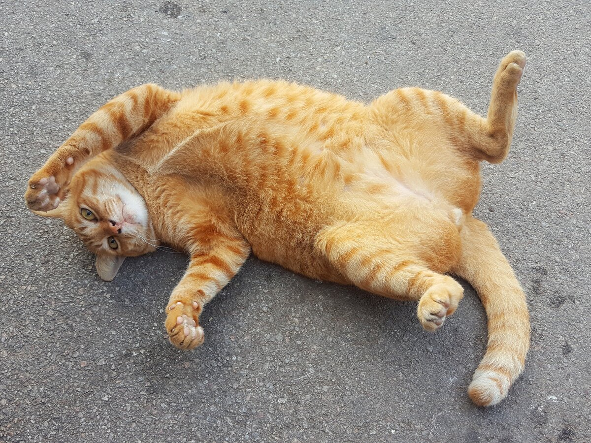
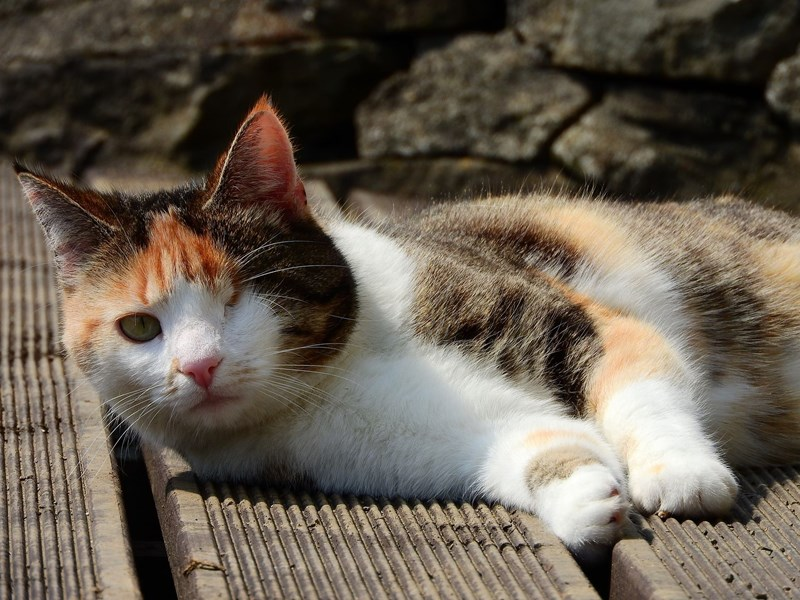
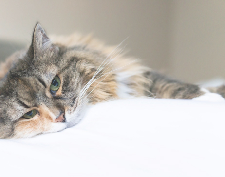
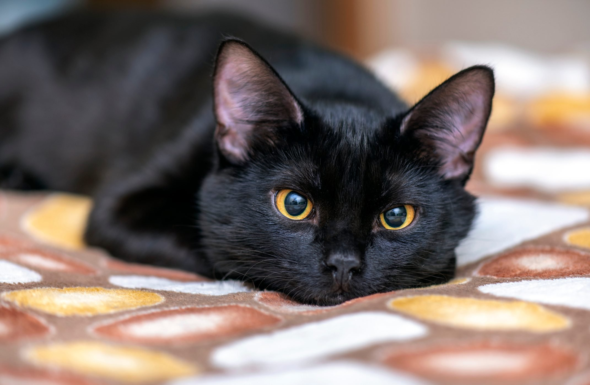
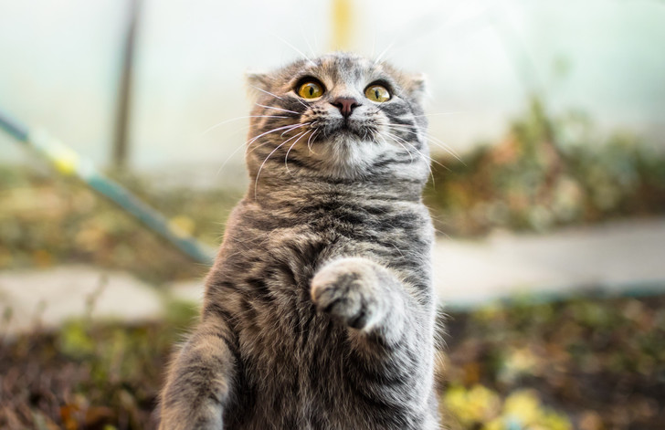
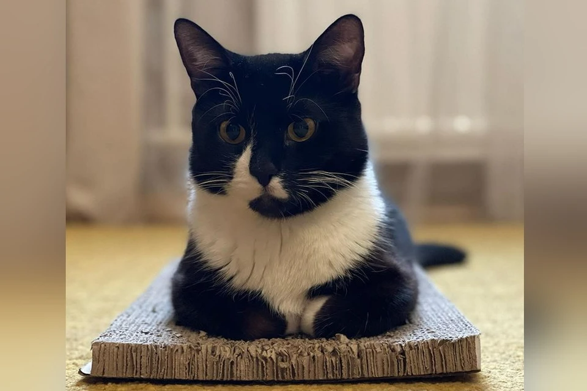
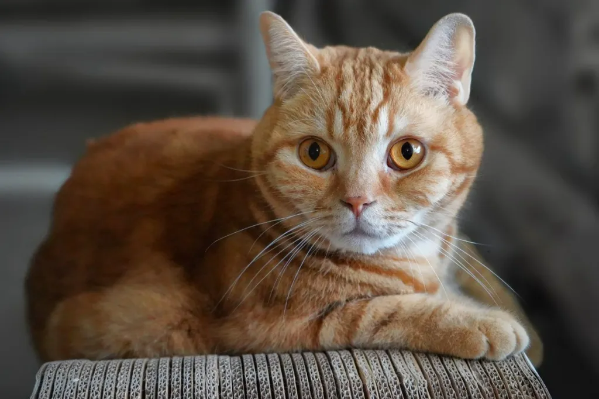

Благодаря вашим пожертвованиям наш приют продолжат существовать, котики находить свои дома, а люди своих друзей.
Ириска
"Работала волонотером в приюте. Одна кошечка, Ириска, запала в самое сердце! Пришлось забрать. С тех пор я ни разу не пожалела, а Ириска с 4 кг поправилась до 6, выглядит отлично, и лучшей кошки я не могу себе даже представить."

Гоша
Забрали Гошу из приюта еще котенком. Я обожаю этого кота, не представляю, как раньше наша семья без него жила! Ни одно застолье без Гоши не обходится, обжора всегда рядом просит колбаски))) .

Анфиса
"Это наша кошечка, Анфиса. Очень радует нас каждый день, игривая, ласковая, играет с игрушками и любит прятаться в коробках."
Вискас
"Вискас всегда со мной когда я делаю уборку или готовку. Очень интересуется шкафами и полками, даже умеет открывать лапой нижние полки."

Маркиз
"Взяли 3-х летнего котика Маркиза в этом приюте, наше пушистое счастье! И почему мы не сделали этого раньше?"

Мартин
"В прошлом марте взяли с мужем котика Мартина. Это было лучшее наше решение! Наше чудо оказалось очень разговорчивое и ласковое. Животные из приюта самые любящие и благодарные, если заслужить их любовь."

Боня
"Наша Боня теперь радует нас каждый день. Мы очень ее любим. И она отвечает взаимностью. Не понимаю, как могла оказаться на улице такая красотка! Каждое утро встречает, мурлыкает, даже лижет, игривая и разговорчивая Бонита!"

Мейсон
"Года 4 назад взяли кота Мейсона. Очень рады! Вспоминаем приют и помогаем периодически. Там хорошо ухаживают за кошками и котами. Высококачественные корма, животных прививают, лечат. Спасибо Вам за счастье!"

Персик
"В выходные стали счастливыми хозяевами замечтательного котейка - Персика 1.5 года! Котик очень классный, умный и активный! Сам нас выбрал , лапой зацепил и не отпускал!"